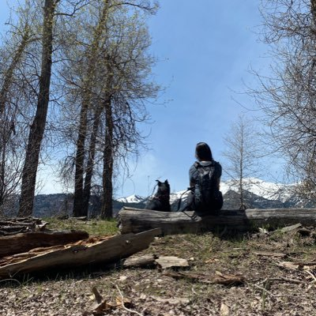

Het Nationaal Videogame Museum is 'the place to be' voor iedereen die meer wil weten (én beleven) over de geschiedenis, maatschappelijke en culturele kant van videogames. Het museum laat haar bezoekers ook de games van morgen ervaren. Gamers van jong tot oud zijn welkom om te spelen, ontdekken, leren en ervaringen online te delen.
Koop nu TicketsEen garagebox in Den Haag is de plek waar het avontuur in 2008 begon, met twee vrienden Hasan Tasdemir en Pascal Rappailles. De garagebox werd al snel te klein waarna ze uitweken naar een loods op een industrieterrein. Helaas was de loods niet verwarmd en moest midden in de winter alles worden overgebracht naar een leegstaand Ministerie van Landbouw. Toen ook dit pand leeggeruimd moest worden, werd de toenmalige collectie van 10 arcade videogames met wat reserveonderdelen opgeslagen in een oude showroom voor klassieke auto’s. Omdat daar geen ruimte was om de kasten te renoveren of te bespelen werd uitgekeken naar passende ruimte. Die werd in 2011 gevonden aan de Cobaltstraat in Zoetermeer. Daar besloot Hasan om met 4 vrienden de locatie te huren en kon het avontuur groeien tot een eigen ontmoetingsplek om hun hobby uit te oefenen en lekker te ontspannen met een game.
Al snel waren er meer mensen die mee wilden doen, waardoor zowel de locatie als de hobbymatige aanpak niet langer toereikend waren, naast ieders dagelijks werk. Het initiatief dreigde aan haar succes ten onder te gaan. Er werd daarom door de vrienden besloten dat een professionele aanpak noodzakelijk was en het niet langer hobbymatig kon worden voortgezet. In goed overleg werd besloten dat een van de vrienden, Hasan Tasdemir, zou proberen om het concept uit te bouwen tot een bedrijf. Waarbij de anderen hem in hun vrije tijd met raad en daad zouden ondersteunen. Hasan besloot in 2014 de Cobaltstraat te verlaten en te verhuizen naar de Bleiswijkseweg. Omdat de inkomsten nog steeds marginaal waren konden alleen antikraakpanden worden gehuurd, waardoor er nog steeds vaak moest worden verhuisd. Van de Stephensonstraat naar de Edisonstraat waar mooie events onder de naam Retro Planet werden georganiseerd voor de community. Ook de collectie werd steeds verder uitgebreid. Terwijl de interesse in retrogaming vanuit familie en vrienden groter en groter werd. Om die reden nam Hasan in 2015 de belangrijke stap om zijn inmiddels omvangrijke collectie onder te brengen in een professioneel bedrijf met de naam Playworks BV.
In 2016 kwam Hasan in contact met Jan Kragt, citymarketeer van de gemeente Zoetermeer, die diep onder de indruk van de collectie, het idee opperde om er een museum van te maken en daarvoor een stichting op te richten. Ter plekke bedachten Hasan en Jan de naam en het Nationaal Videogamemuseum werd geboren. Samen met een aantal belangrijke spelers uit de Nederlandse game community werd vervolgens stichting Nationaal Videogame Museum in het leven geroepen. Het gemeentebestuur was enthousiast over het idee en besloot het museum financieel te ondersteunen. Hiermee kon een verwarmde opslag worden gehuurd waar de volledige collectie kon worden ondergebracht en deels worden tentoongesteld. Begin 2017 werd in nauwe samenwerking met de gemeente een echte museumlocatie gevonden: het voormalige V&D-pand in het stadshart van Zoetermeer.
Vanaf mei 2017 werd er door een grote groep vrijwilligers en fans keihard gewerkt om de pilot van het museum ingericht te krijgen zodat het op 1 december 2017 ready to play was! De enorme toestroom van enthousiaste bezoekers en de vele positieve reacties op ons museum spreken voor zich. Het Nationaal Videogamemuseum is inmiddels een groot succes, mede dankzij de tomeloze inzet van al onze medewerkers en vrijwilligers.
Inmiddels zijn we druk bezig met het vergroten van het museum, het verdiepen van de beleving en het versterken van de museale en educatieve waarde van ons mooie museum. Wij doen er alles aan om het museum verder te professionaliseren en klaar te maken voor een volgend ‘level’ op een vaste en definitieve locatie. En onze ambitie gaat nog veel verder, want we willen het Nationaal Videogame Museum laten uitgroeien tot een totaalconcept, met ondermeer:
In de schoolvakanties (regio Midden) zijn wij ook op maandag en dinsdag geopend. Kinderen jonger dan 10 jaar mogen alleen onder begeleiding het museum in. Tickets voor kinderen en begeleiders zijn dezelfde prijs. Kijk op onze ticketpagina voor de tarieven.
Gesloten
Gesloten
- | - | - | -
- | - | - | -
- | - | - | - | -
- | - | - | - | -
- | - | -
Hier zijn onze gallery van het museum
Hier zijn de reviews van het museum
Ik keek mijn ogen uit, wat een super leuk museum. Heerlijk om aan de slag te kunnen met deze games. Het was als vroeger naar een arcadehal gaan zonder al die guldens en dan hebben we het niet eens over de retro gameconsoles die er plenty staan. Ik hoop dat we nog veel meer te zien krijgen.
Samen met 4 jongens (10 t/m 12 jaar) geweest. We hebben allemaal genoten. Leuke games en veel nostalgie (tenminste voor mij). Wij gaan absoluut nog een keer, alleen vanuit Groningen is het wel een stukje rijden, maar zeker de moeite waard.

Een plek waar je even terug in de tijd kan gaan, van atari tot PlayStation. Is hier genoeg te doen voor jong en oud. Daar zorgen de arcade kasten ook voor in een podracer racen of Tekken tegen mensen spelen. Neem hier vooral een kijkje en laat je overrompelen door de game wereld.
Algemene vragen:info@nationaalvideogamemuseum.nl
Pers:pers@nationaalvideogamemuseum.nl
Zakelijk:zakelijk@nationaalvideogamemuseum.nl